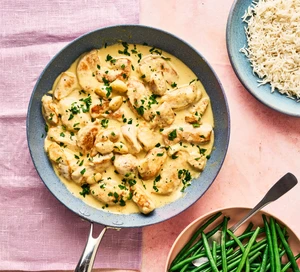

Garlic Chicken

Description
Ingredients
- 4 medium chicken breasts
- 75g plain flour
- 2 tbsp olive or rapeseed oil
- 50g unsalted butter
- 10-15 small garlic cloves
- 250ml hot chicken stock
- 100ml double cream
- 30g Parmigiano-Reggiano, finely grated
- small bunch of flat-leaf parsley, finaly chopped
- cooked rice and steamed green beans, to serve
Steps
- Tip the chicken into a shallow bowl and sprinkle over th flour. Season well. Heat the oil in a large frying
pan over a medium-high heat and fry chicken, shaking off any excess flour first, for 1-2 mins until lightly
golden all over.
- Reduce the heat to medium and add the butter. Peel as many garlic cloves as you prefer, and drop these into
the pan. Cook for 5 mins until the garlic has turned lightly golden, stirring to keep the chicken from
burning.
- Pour in the stock and simmer for 10 mins until the garlic is tender. Add the cream and cheese and simmer for
a further 5 mins until the sauce thickens slightly. Taste for seasoning and adjust as needed. Scatter with
the chopped parsley, if using, and serve hot with rice and green beans, if you like.